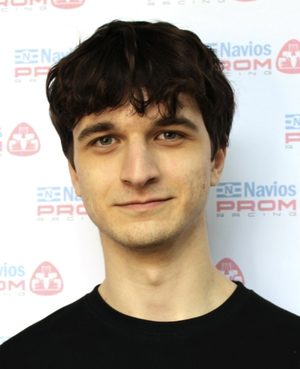
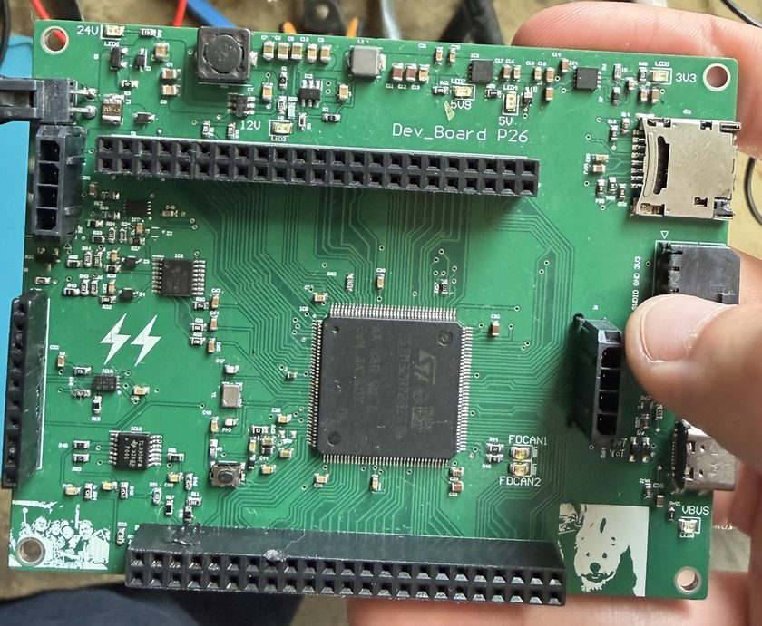
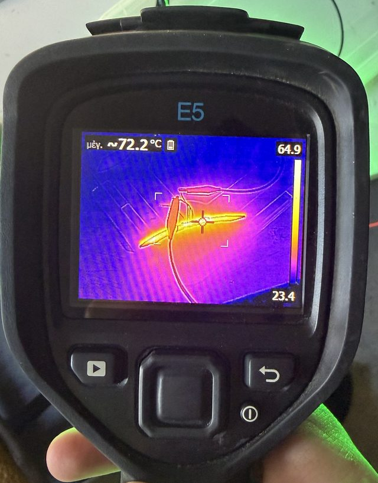
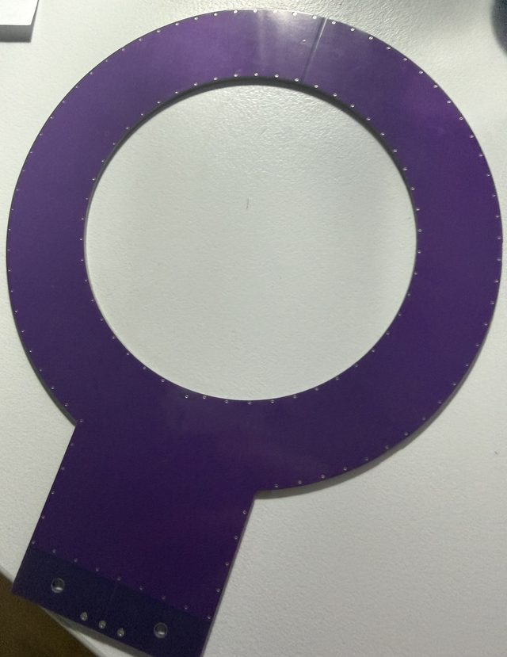
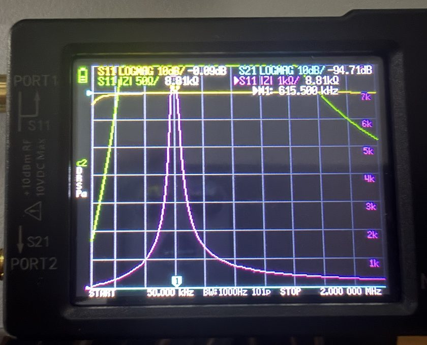

Sokratis S. Chouliaras

Undergraduate Student, Electrical and Computer Engineering
School of Electrical and Computer Engineering
National Technical University of Athens (NTUA)
I am a third-year student in the five-year ECE diploma programme at NTUA.
I work (and hope to keep working) on analog and RF circuits, electromagnetics and electromagnetic compatibility.
[Research]
[Experience]
[Projects]
[Education]
[Skills]
[CV (PDF)]
Contact Information
E-mail: sschouliaras@gmail.com
Location: Athens, Greece
Interests
- Analog and RF integrated circuit design
- Passive networks and filter theory
- Electromagnetics
- Electromagnetic compatibility (EMC) and near-field measurements
- Embedded systems and PCB design
Research
Passive RC Polyphase Filters
Undergraduate research, NTUA, supervised by Prof. Sotiriadis. 2026 to present.
Passive RC polyphase filters generate and select quadrature signals in radio receivers,
where their image rejection ratio (IRR) sets how well the unwanted image band is suppressed.
I study an alternating RC polyphase topology and compare it against the conventional one
when the source and load resistances are finite, which is the case in any real circuit.
- The alternating design improves the image rejection ratio by 3 dB over the conventional design.
- The analysis is built on transmission (ABCD) matrices, so the source, each stage and the load
are blocks that can be cascaded. A DFT modal decomposition splits the four-phase network
into four independent two-port chains, which gives closed-form transfer functions.
- I wrote a symbolic nodal-analysis tool in MATLAB for networks with any number of phases and stages,
and checked its results against LTspice for one, two and three stages.
Manuscript in preparation:
- S. S. Chouliaras, "Analysis and Optimization of Alternating RC Polyphase Networks
With Finite Source and Load Resistance," in preparation.
Experience
Prom Racing, NTUA Formula Student Team
Low Voltage Electronics Engineer (PCB design and systems). November 2025 to September 2026.
Prom Racing designs and builds a single-seat electric race car every year and takes it to the
Formula Student competitions. I was a member of the Low Voltage subteam, which is responsible
for the car's control electronics and wiring.
- Development board. I designed the team's STM32 development board in Altium Designer,
with CAN bus and I2C interfaces. It was fabricated and the team now uses it to train
new members on STM32 firmware.
- Battery state of charge. I implemented a Kalman filter in C on an STM32 microcontroller
that estimates the battery's state of charge. It ran on the car during competitions.
- TSAL. I maintained the PCB of the Tractive System Active Light, the safety light that shows
when the high-voltage system is live.
- Registration quizzes. I was on the team's squad for the timed engineering quizzes that decide
entry to the competitions (FS Germany, FS Austria, FS Spain).

The STM32 development board.

Checking the TSAL board with a thermal camera.
Projects
Note: the descriptions below are short on purpose. If you would like more on any project
(photos, schematics, measurements, code), feel free to
e-mail me.
Shielded PCB H-Field Near-Field Probe
Altium Designer, NanoVNA. 2026.
A near-field probe picks up the magnetic field a few millimetres above a circuit, which makes it
possible to find the part of a board that radiates. A good probe has to respond to the magnetic
field and reject the electric field. I built one for EMC debugging by reproducing a design published
in IEEE Transactions on Electromagnetic Compatibility in 2026 (Filipašić and Dadić),
with some layout changes of my own.
- Four-layer PCB with a concentric spiral coil of 18 turns per layer, enclosed by a shield
closed with stitching vias.
- The spiral geometry is generated by a script inside Altium Designer, not drawn by hand.
- The bare board measures 232 µH with a self-resonance at 615.5 kHz, against
252.7 µH and 630 kHz reported in the paper.

The fabricated probe. The coil is hidden inside the shield.

Impedance of the bare board on the NanoVNA, with the self-resonance at 615.5 kHz.
Epsilon-Near-Zero Metal-Dielectric Multilayers
MATLAB. Course project, Dynamic Electromagnetic Fields, NTUA. 2026.
A material whose permittivity is close to zero behaves in unusual ways, but no natural solid has
that property across the whole visible spectrum. This project asks how close a periodic stack of
thin metal and dielectric layers can get, starting from measured optical constants of five metals
(Au, Ag, Ti, Al, Be) and five dielectrics (a-Si, c-Si, GaAs, GaP, Ge).
- Effective-medium theory gives the permittivity of the stack for each polarization. An exhaustive
search over the metal fraction finds the best design for all 25 metal and dielectric pairs,
with and without losses.
- For the field perpendicular to the layers, I show analytically that mixing never helps:
the best structure is always one of the two pure materials.
- The measured data are extended to all frequencies with causal Drude and Lorentz models,
and the impulse response and the response to a modulated Gaussian pulse are computed in the time domain.
Digital Near-Infrared Night Vision Goggles
Raspberry Pi 5, IR camera module, custom PCB. 2026.
Digital night vision goggles built around an off-the-shelf infrared camera module.
A Raspberry Pi 5 processes the image, and a custom PCB that I designed drives the infrared LEDs
that light the scene.
Education
-
National Technical University of Athens (NTUA)
Diploma (five-year integrated M.Eng.) in Electrical and Computer Engineering, September 2024 to present (expected 2029)
GPA: 9.55/10
-
Leonteios School of Nea Smyrni (Lycée Léonin)
High School Diploma, June 2024
19,400/20,000 on the national university entrance exams. School award for the top grade in Physics, Chemistry and Mathematics.
Schools and conferences attended:
- 32nd Summer School-Conference "Dynamic Systems and Complexity", NTUA, July 2026
Skills
- Programming: C/C++, MATLAB, LaTeX
- Design and simulation: Altium Designer, LTspice, STM32CubeIDE, Fusion 360
- Hardware: STM32, CAN bus, I2C, PCB layout, VNA measurements, 3D printing
- Languages: Greek (native), English (C2, Michigan ECPE with Honors)
Last updated: November 2026